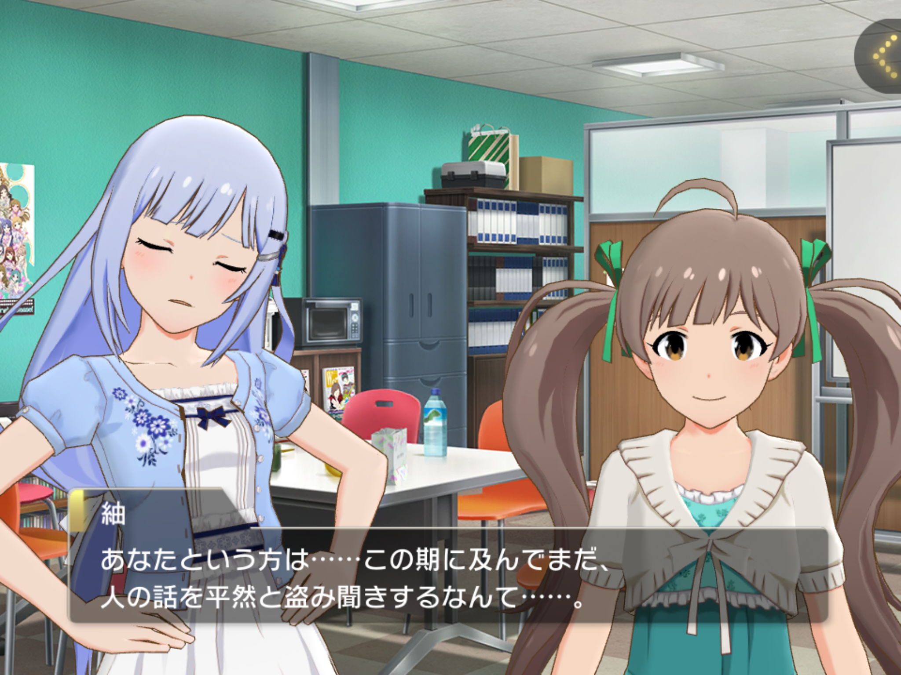
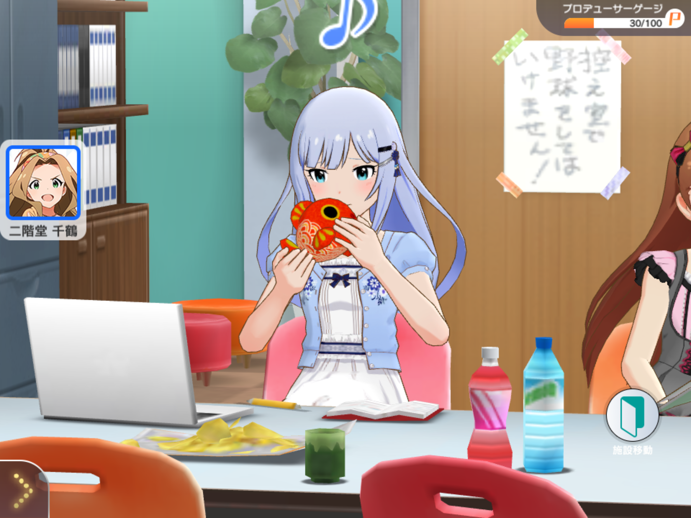
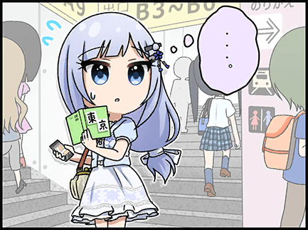
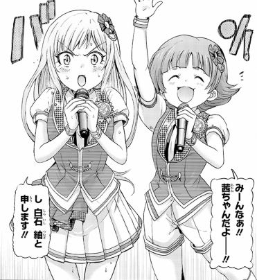
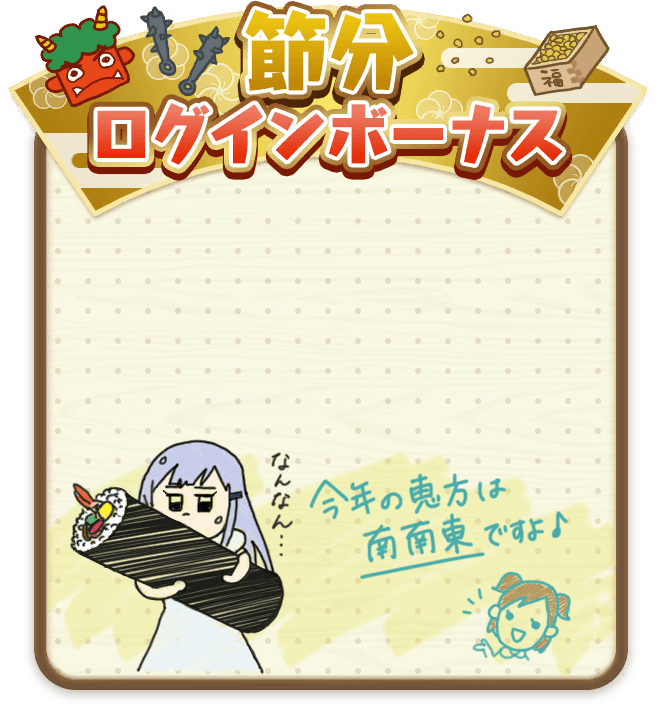
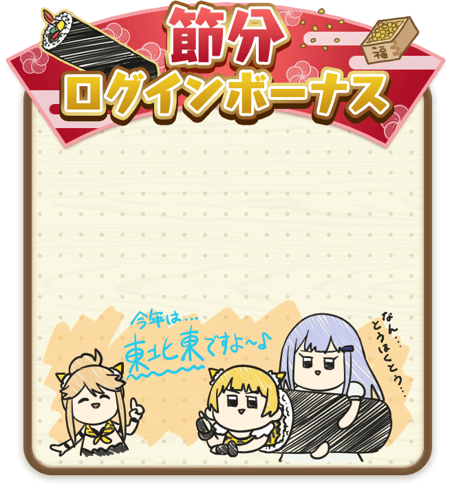
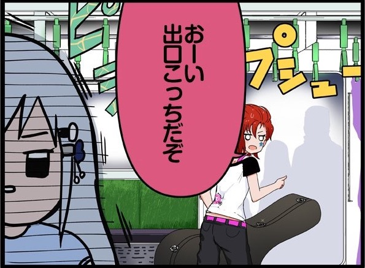

【介紹】 白石紬
文章目錄

基本介紹
石川縣金澤市出身，是個正值青春年華，17歲的女子高中生。
在製作人前往位於金澤的和服店，歸還租借的舞台服：加賀友禪時，遇見了顧店的紬。作為和服店店主的女兒，紬身上那令人無法忽視的氣質，使得製作人不禁提出成為偶像的請求。
在製作人遞出名片後沒有任何聯絡的紬，就這樣在一個月後擅自的辦好了搬家、轉學的手續，並且為了試鏡下足了努力，直到在事務所遇到製作人後，才知道不需要試鏡便直接錄取了。
帶有傳統氣質的和風偶像，大和撫子（至少エミリー是如此認為的），SSR的舞台衣服幾乎都有和洋並蓄的特徵。個性上相當注重細節，談吐端莊，禮儀端正，平時的談吐皆為標準的東京腔，過度驚嚇或是心情低落時會轉回金澤調。不苟言笑，容易緊張，個人曲（瑠璃色金魚と花菖蒲）MV中時幾乎都不會露出笑容。
經常對事情過度理解，誤會製作人是常有的事。（ex. 製作人一直站在旁邊，但紬沒注意到，以為是製作人有偷聽他人講話的癖好）

非常喜歡金魚，在事務所偶爾會看到她拿著金魚玩偶把玩。家中也飼養著從老家帶來的金魚，據說是撈金魚時得到的。

對自己認路的能力極有信心，但實際上卻是個路癡，時常在東京迷路。


順帶一提，紬的個人支線中經常出現的背景就是位於金澤的ひがし茶屋街。此外，紬的興趣之一「探訪日式甜品店」（甘味処の散策），也或許是由於金澤的傳統和式甜品屋被完整的保存了下來而產生的。
紬吸引人的地方
非常標準的偶像身材，髮尾的小辮子在跳舞的時候一直甩動非常可愛；以及對任何事物都非常認真的態度。
歌曲
➤瑠璃色金魚と花菖蒲
作為紬第一首個人曲，同時混合和風以及重電音元素，帶有強烈情感、盼望的歌曲。
瑠璃色金魚（紬自身）所盼望的，隔著水面凜然綻放的花菖蒲（偶像、對外界的期盼、又或是製作人）。反映著紬自身自幼就想成為偶像的夢想，以及為了實現這份夢想的努力。
強而有力的曲調，以及較為風雅的歌詞，搭配較高的演唱難度，使得這首歌擁有較高的人氣。
初次Live演出為EXTRA LIVE MEG@TON VOICE!，之後只要有登場幾乎就會演唱的曲目。2018年LisAni in Taiwan時也有在台大體育館演唱過。
➤さかしまの言葉
與《瑠璃色金魚と花菖蒲》相比，是一首非常舒服，節奏緩慢，卻又有著巨大情緒起伏的一首歌。
如果說《瑠璃色金魚と花菖蒲》是表面的紬，《さかしまの言葉》則敘述著紬的內在。不管在旋律或是歌詞上皆為極品，是一首非常動人的歌曲。
〔EScape〕真壁瑞希、白石紬、北沢志保
クール系美少女ユニット。以近未來風格為主，講述著機器人與感情的故事。
➤Melty Fantasia
MTG08收錄，為2018年4月20日〜4月28日的巡迴活動曲。
使用了Electronic Drum，較少的大鼓，較不厚重的Saw Bass，加以較為清澈的鋼琴以及弦樂，營造出近未來的風格。
歌詞描述著廣播劇最後的故事情節（強烈建議補完廣播劇），心境上帶有強烈的期盼。
舞步上最具特色的就是第三次副歌時的繞圈迴轉（美少女迴轉壽司），如同專輯封面一般。此外在C段中，有著F#5的超高音演唱也是值得注意的地方（普通歌手的演唱音域大約到A4左右而已）。
6th Live中有還原遊戲MV中衣服的燈光，在全曲結束時，如同機器人沒電般的特效讓在場許多人為之驚艷。
➤I.D ～EScape from Utopia～
C/W曲，非常輕快的Future Bass，歌詞描述著廣播劇中後的部分，因此在故事線中，這首是比前曲早的。有著非常可愛的機械舞，自從發售紀念後便好評不斷。
TB03〔屋根裏の道化師〕ラスト・アクトレス
玩家票選活動THE@TER BOOST所投票出來的團體。以此為契機，獲得偵探一角演出。收錄於THE@TER BOOST 03。其活動創下了遊戲史上最高的2500位線。
劇場懸疑風格，歌詞中每一句的演唱者均代表著其角色的立場。遊戲中Boost段的間奏為遊戲獨有，專輯並未收錄。
〔ジェネシス×ネメシス〕Justice OR Voice
MTW01收錄，特攝劇偶像英雄的後篇。
紬、ジュリア、茜作為英雄方「Genesis」、歌織・真2人則作為反方「Nemesis」。
歌曲為樂團演出收錄，MV中Boost時的戰鬥場面為特色。
キラメキラリ（cover with 茜ちゃん）
Blooming Clover中，作為暖場團與茜一起翻唱了キラメキラリ。
反差感很大，強烈建議聽聽看。

想體會不同感覺的紬的話，請務必入手BC05限定版。
全體曲
➤FairyTaleじゃいられない
妖精的全體曲。作為TD第一個巡迴活動（PST Tour），且為MTG02專輯收錄曲，非常的有感情渲染力（エモい感），帥氣的一首歌。
➤brave HARMONY（Brand New Ver.）
雖然是參照MTF的分組方式，專輯發售時紬並未登場，在遊戲中紬被分類到了藍月。
6th福岡場中，南早紀小姐也作為演出的一員獻唱過。
卡面
迄今已有4張SSR（兩張常駐，一張限定，以及一張FES限定）。
【踏み出した夢への一歩】

開服初期6張SSR中的其中一張，也是紬最具代表性的一張SSR。
覺醒前提著行李箱在東京鬧區的路口徬徨著，很能呼應支線劇情中「隻身來到東京」的部分。
以無袖和服為基準設計，衣服上四處可見水引細工設計，並且在髮飾的設計最為華麗。以花菖蒲為意象的設計，在裙襬內側也能瞥見。髮尾結也使用同樣的花菖蒲設計。
Gift娃娃也是參照這張所製作。
作為第一波能夠突破至5星的卡片，整體配色變為黑色與白色，水引細工髮飾變成了王冠，髮辮變成了單純的線綁，有點可惜。
【都会の風に吹かれて】

TD第一次的FES限定，也是從這次開始能上天井。
以西式禮服為基礎設計，髮尾僅用白髮圈束著。脖子以及右手的珍珠項鍊襯托出高貴的氣息，胸前的藍色肩帶上的藍色玫瑰是其特色。
【劇場サスペンス[探偵]】
TB卡面。非常經典的英式紳士偵探服，不強調身材的樸素衣裝。髮尾採用了與偵探服相符的茶色蝴蝶結。
【…コン♪】

直至本文寫作時最新的一張限定卡面，覺醒後卡面的構圖在ML中是非常少見的做法。
採用洋和並蓄的衣服設計，以西式結婚禮服為基底，搭配白色長手套，加上了和風特有的纏腰帶以及裙側的金色刺繡，使得整體設計非常的具有特色。
裙身使用了刺有鶴的布料，頭髮左側別上了三朵玫瑰所組成的髮飾，與腹前的三朵玫瑰一樣。
突破之後裙身刺繡變為花刺繡，並且取下了長手套。
此外還有數張SR卡面，包括接續著RPG系列的卡面。
其他
造成紬形象崩壞的兩張登入圖。
|  |  |
以及在四格又被拿出來玩

此外，在簡訊中可得知，出差時幾乎都會帶特產回來。
帶過的特產
栗蒸し羊羹
水まんじゅう
日向夏のくずきり
蕎麦饅頭
聲優
南 早紀（音：Minami Saki），81事務所所屬，東京廣播學院聲優科畢業。出身於九州的大分縣中津市。
喜歡唐揚雞（中津市特產），以及可愛的女孩子（事跡太多不一一說明）。歌唱實力派，在唱歌時的聲音較為渾厚，在高音域也有非常好的表現。
詳細事蹟可以參閱下方連結。
較著名的出演作品，除了紬以外還有下述：
- BanG Dream!（大湖里実）
- 八月のシンデレラナイン（野崎夕姫）
- ライフル・イズ・ビューティフル（姪浜エリカ）
- 温泉むすめ（下田莉華）
上一季（2019年春）所放送的的八月のシンデレラナイン（中譯：八月的棒球甜心）中所飾演的野崎夕姫對みなみちゃん而言算是非常重要的主役角色。
值得一提的是ライフル・イズ・ビューティフル（Rifle Is Beautiful）中，與伊吹翼役的Machico，以及隔壁Shiny Colors中，飾演白瀬咲耶的八巻アンナ共同參與了團體「ライフリング4」。
於ラジオ日本每週土曜日26:00（台灣時間：每週日凌晨一點）有與其他81事務所的聲優（福緒唯、向井莉生）共同主持的廣播節目『やっぱりSが好き〜SAY YOU! LOVE ME!』（須跨關東區），有興趣的朋友可以看看。
此外還有みなみちゃん個人的不定時節目『南早紀の唐揚げはおあずけ』（南早紀的先把炸雞放一邊），下回放送：7/25 22:00 (GMT+9)
題外話
喜歡吃炸雞的是南早紀，不是紬。
Reference